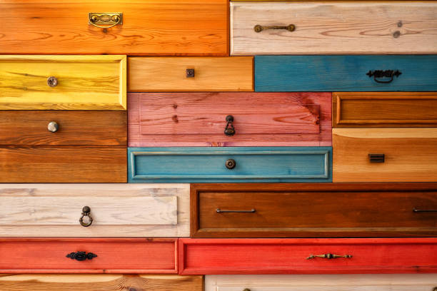

Taller de reciclado de muebles y objetos
Todo objeto que nos rodea se puede transformar, para adaptarse a nuestros gustos y estilo de vida.
Soy Gise, y te invito a conocer mi taller.

Todo objeto que nos rodea se puede transformar, para adaptarse a nuestros gustos y estilo de vida.
Soy Gise, y te invito a conocer mi taller.